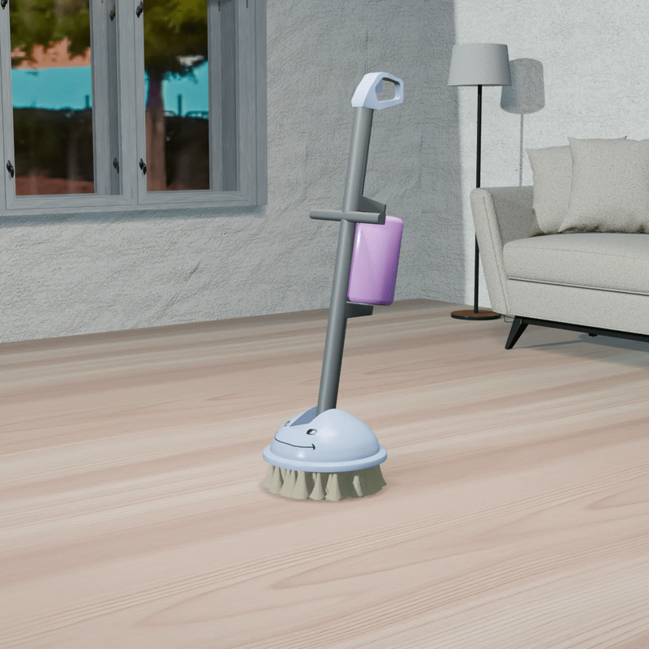
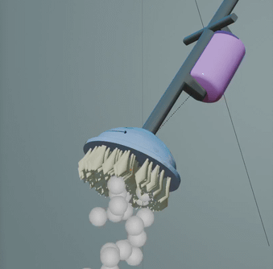
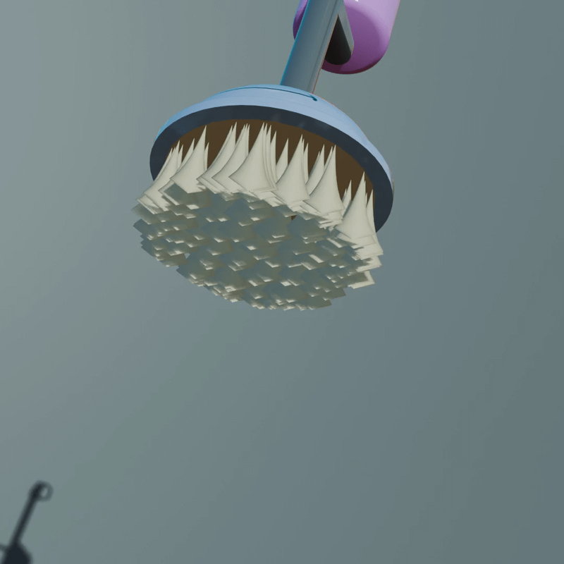

Spinning Scrubbing Action
Stevie Scrubber's attachements spin so you can put less effort into scrubbing, and also allowing for a more thorough clean then what you'd normally get.
Super Sud Slinger
Stevie Scrubber has a soap dispenser built into the base so you can spritz out cleaning solution whenever you need it, getting rid of the need for any spray bottles or buckets of liquid.


Detachable Cleaning Heads
You can swap out Stevie Scrubber's cleaning head for anything you need for whatever purpose you're using Stevie Scrubber for.